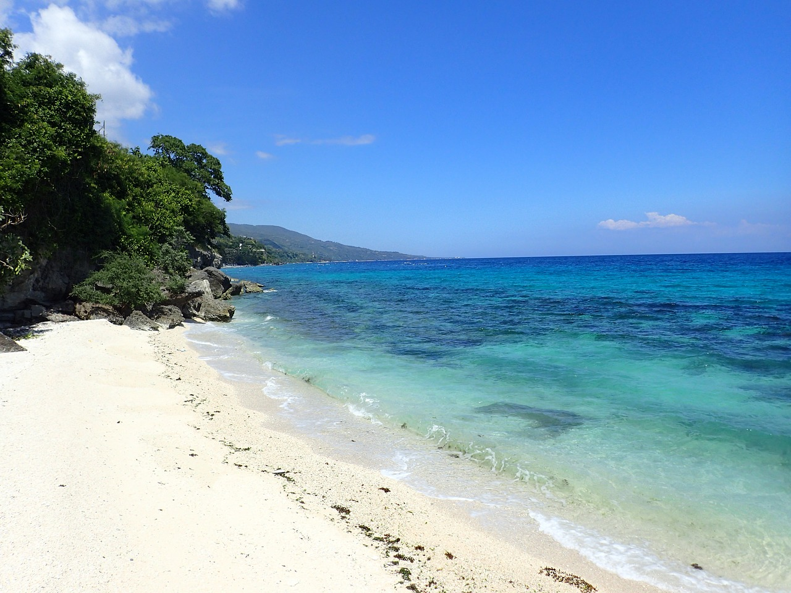

Cebu's Natural Beauty

Oslob is a coastal town located in the southern part of Cebu, Philippines. It is
best known for its unique experience of swimming with whale sharks, which attracts
tourists from all over the world. Aside from its marine activities, Oslob also boasts
natural attractions like Tumalog Falls and Sumilon Island, known for its clear
blue waters and sandbar. The town has a rich history, with remnants of Spanish-era
structures like the Baluarte watchtower and Immaculate Conception Church. With its
blend of nature, history, and adventure, Oslob offers a memorable and scenic escape for
travelers. 🌊🐋🏝️

Osmena Peak is one of the highest points in Cebu,
with an elevation of 1,013 meters above sea level.It is also popular for its stunning
cliffs and rock formations. Osmeña Peak is the highest point on Cebu Island, located in
the town of Dalaguete. It offers a breathtaking view of jagged hills, green landscapes, and
the distant sea, making it a favorite hiking destination. The hike to the summit is relatively
short and beginner-friendly, perfect for nature lovers and adventure seekers. Known for its cool
mountain air and panoramic scenery, Osmeña Peak is often called the "Little Baguio of Cebu." 🏞️🥾🌄

Kawasan Falls is one of Cebu's most iconic tourist destinations due to its
stunning natural beauty, crystal-clear turquoise waters, and adventurous
activities.Kawasan Falls is a multi-tiered waterfall system nestled in
Barangay Matutinao, Badian, Cebu, Philippines. Renowned for its crystal-clear
turquoise waters, the falls are fed by the Kabukalan Spring and cascade into inviting
natural pools ideal for swimming. The first and largest waterfall stands approximately
40 meters high, with subsequent tiers offering equally picturesque spots for visitors. Beyond
its scenic beauty, Kawasan Falls is a popular destination for canyoneering adventures, attracting
tourists seeking both relaxation and thrill.